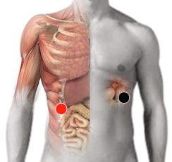

Amiloidosis
Pares:
bazo - hígado
bazo - bazo

Generalidades:
La amiloidosis es una enfermedad poco frecuente y se debe a un problema en el metabolismo de la proteína amiloide. Este tipo de proteína se genera en la médula osea, así que participa en la producción de anticuerpos. Cuando no se puede metabolizar correctamente se comienza a acumular en diversos órganos y tejidos provocando diversos transtornos. El pronóstico de vida (para la alopatía) es de 1 - 4 años. Las complicaciones cardiacas y la insuficiencia renal, sumadas a los trastornos subyacentes suelen ser las causas de muerte.
Síntomas:
La enfermedad progresa lentamente, la mayoría de las veces sin un diagnóstico correcto. Cuando llega a etapas avanzadas puede presentar diversos síntomas:
Causas